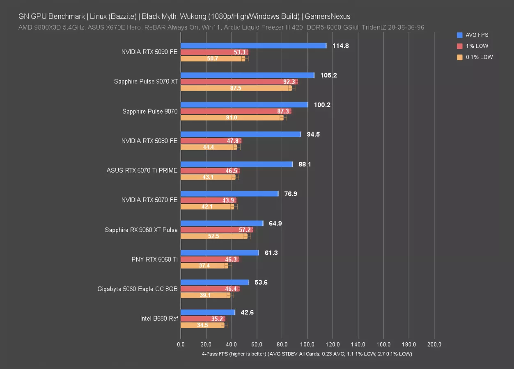

.png)

¿Qué es? Bazzite
Bazzite es una distribución Linux moderna basada en Fedora, diseñada específicamente para gaming y entretenimiento. Combina el poder de Fedora con optimizaciones gaming, herramientas multimedia y una experiencia fluida lista para jugar.
¿Por qué esta distro?
Bazzite es la distro gaming definitiva. Con Proton preconfigurado, drivers de GPU optimizados y una interfaz hermosa, tienes todo listo para disfrutar de tus juegos favoritos sin complicaciones. Es gaming puro y simple.
Características principales
Rendimiento Gaming
Bazzite está optimizado desde cero para gaming. Kernel personalizado, drivers GPU actualizados, Proton preconfigurado y herramientas gaming. Tu experiencia gaming será excelente sin sacrificar estabilidad.
Estética Impresionante
Bazzite ofrece un diseño visual moderno y atractivo. Tema oscuro elegante, iconos pulidos e interfaz intuitiva. Tu experiencia visual será tan buena como tu rendimiento gaming.
Velocidad de Fedora
Basado en Fedora, Bazzite ofrece la última tecnología y actualizaciones regulares. Es rápido, estable y siempre actualizado con las novedades del ecosistema Linux.
Herramientas Preinstaladas
Bazzite viene completo. Steam, OBS Studio, Discord, navegadores modernos y todas las herramientas gaming que necesitas. Sin necesidad de instalar nada más para empezar a jugar.
Comunidad Gaming
Detrás de Bazzite hay una comunidad apasionada de gamers. Encontrarás soporte, guías gaming, y una comunidad que entiende lo que necesitas como jugador Linux.
Personalizable
Aunque viene optimizado de serie, Bazzite es totalmente personalizable. Ajusta tu experiencia gaming según tus necesidades, desde configuración de drivers hasta atajos personalizados.
Rendimiento Gaming
Windows 11
85 FPS
1% Low: 75 FPS
Bazzite
92 FPS
1% Low: 82 FPS